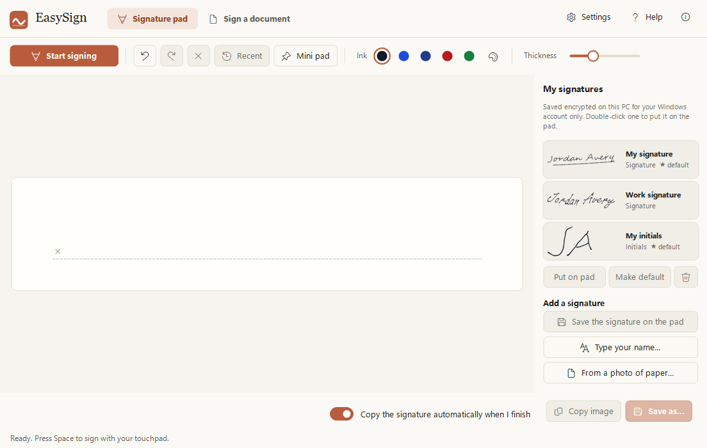
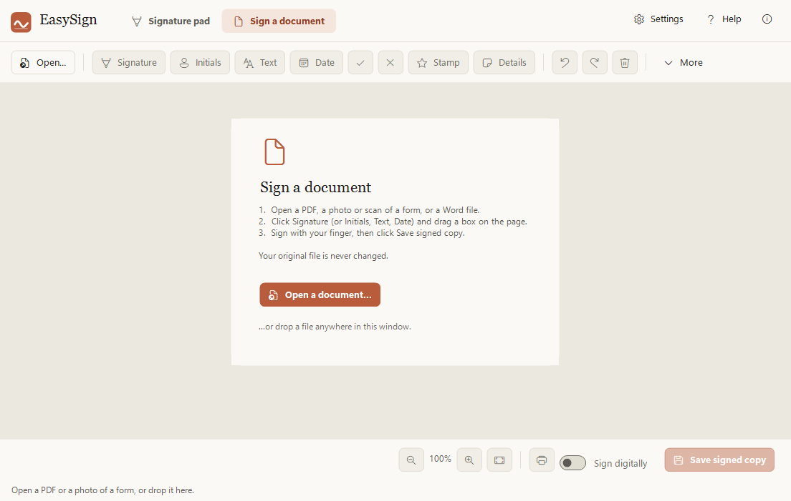
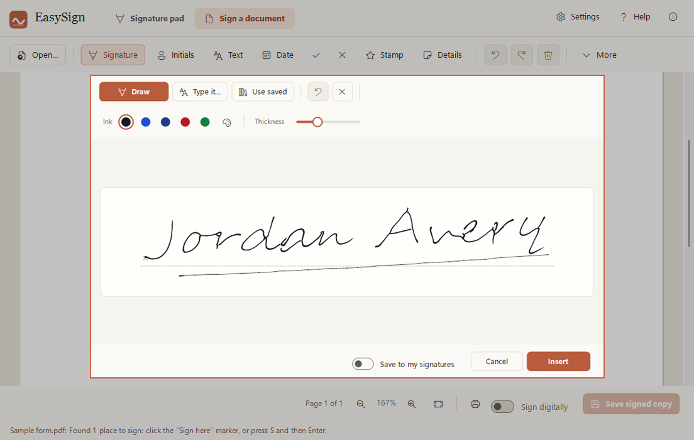
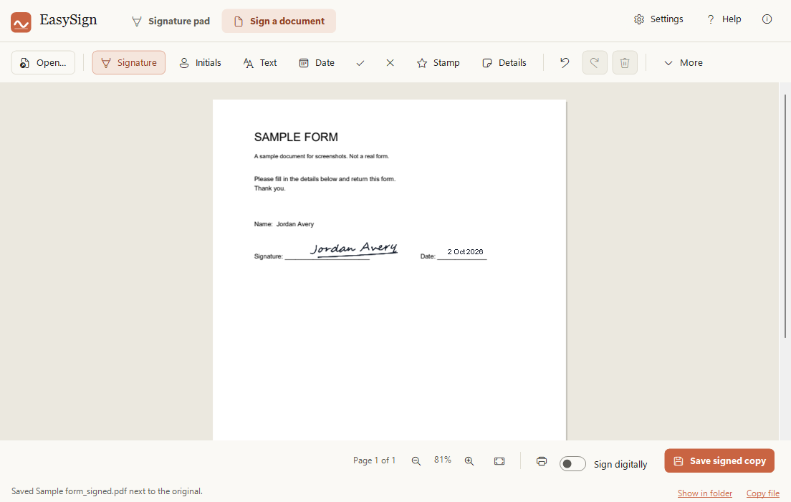
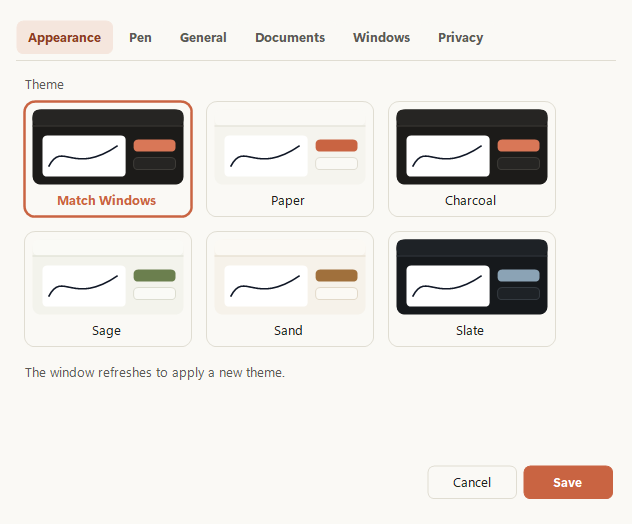

Sign with your finger,
right on your laptop.
EasySign turns your touchpad into a signature pad. Sign PDFs and photos of forms in seconds, without printing, scanning or a phone. Free, and everything stays on your PC.
Press Space. Sign with your finger. Done.

No clicking needed. Each spot on the touchpad matches the same spot on the pad.
Try it
Sign here. Nothing is saved.
Drag with your mouse, a finger or a pen to sign on the pad.
Or try it the EasySign way: click Use touchpad, then just move your finger on the touchpad. No clicking or holding. Hold Shift to lift the pen, press Space or Esc when you're done.
This is a demo in your browser. The real app reads exactly where your finger is on the touchpad, so your signature comes out even more like you.
Your signature stays on this page only. It is never saved or sent anywhere.
Print it. Sign it. Scan it. Send it back. EasySign turns all of that into a few seconds with your finger.
Features
Everything you need to sign, nothing you don't
Made for the moment someone emails you a form and asks you to sign it.
Your touchpad is the pen
Press Space and sign with one finger. Each spot on the touchpad matches the same spot on the pad, so it looks like your real signature.
Sign any document
PDFs and photos or scans of forms. Add your signature, initials, text, the date or a tick, then save a signed copy. Word files with {{signature}} placeholders work too. Your original is never changed.
Or just type your name
No touchpad? Type your name and EasySign writes it as if you signed with your finger. Pick a look, then make it tighter or looser, neater or messier, uphill or downhill.
Private by design
No account, no upload, no tracking. EasySign works offline: your signatures and documents never leave your PC, and saved signatures are encrypted for your Windows account only.
Fast for repeat forms
Sign like last time puts everything in the same spots on next month's copy. Stamp adds your initials and the date in one click.
Paste it anywhere
Your signature is copied when you finish, ready for Ctrl+V in Word, Outlook or anything else. Ctrl+Alt+S opens a small pad over any app.
How it works
Three steps. No printer, no scanner.
Open the document
Open a PDF or a photo of a form, or drop it on the window.
Drag a box and sign
Click Signature, drag a box where you sign, and sign with your finger. Or use a saved signature.
Save and send
Save a signed copy. Copy file puts it on the clipboard, so Ctrl+V attaches it to an email.



Your signatures stay yours.
EasySign works offline. Nothing about you, your signatures or your documents ever leaves your PC.
A closer look
Calm, clear, and yours to style.



Download
Get EasySign
Free to use for your own personal or work use. Installs for your Windows account only, no administrator rights needed.
Download the installer (41 MB)
- Version
- 1.5.1
- Needs
- Windows 10 (version 1809 or later) or Windows 11, 64-bit. A Precision Touchpad to sign with your finger; a mouse, pen or typing works too.
- SHA-256
26eabc7c2ffd15027f315b91e81bc341aefe14cd4701626e0d4e0ab8a2f567ed- Terms
- Licence agreement (you accept it during setup)
- Older versions
- All releases
Installing
EasySign is new and made by one person, so Windows may be cautious about it at first. This is normal.
- If your browser says the file is not commonly downloaded, choose Keep.
- Right-click the downloaded file, choose Properties, tick Unblock and click OK. If there is no Unblock box, skip this.
- Double-click it. If you see "Windows protected your PC", click More info, then Run anyway.
- Accept the licence agreement and follow the steps.
A note from the developer
Thank you for trying EasySign! I made it so that signing a document takes a few seconds, not a printer, a pen and a scanner. I really hope you enjoy using it.Aalok L, maker of EasySign
Feedback
Tell me what you think
Found a bug, have an idea, or just want to say what you think? I read every message.
Send feedback
A short private form: how you would rate EasySign, what works well and what could be better.
Report a problem
Something not working? Tell me what you did and what happened, and I will look into it.
Your message goes only to me: nobody else can see it, and you don't need an account. The form is a Google Form, so Google handles what you send.